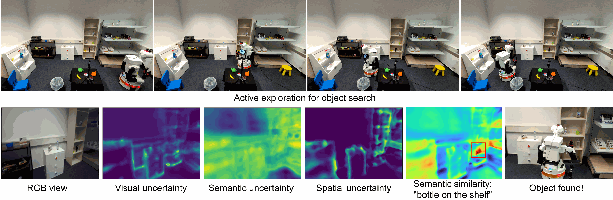
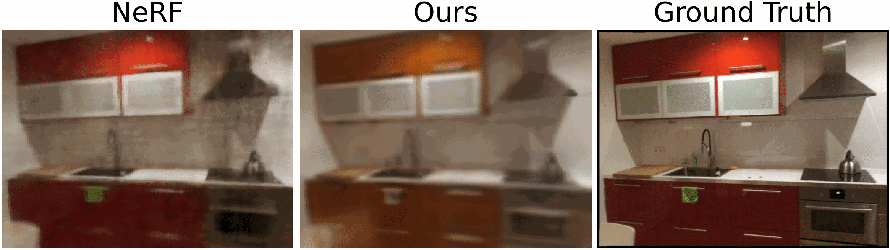
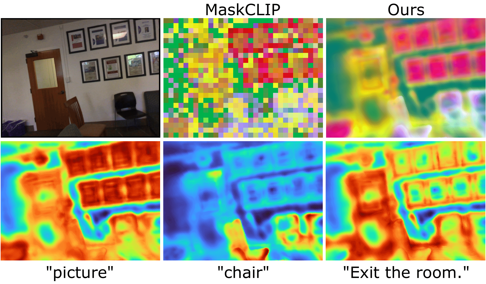
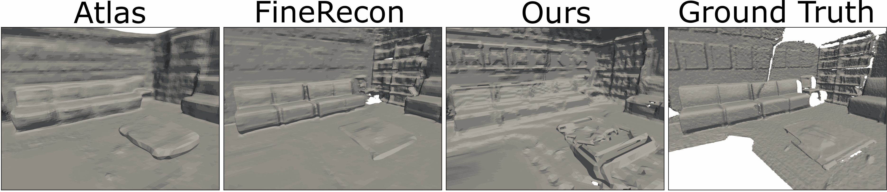
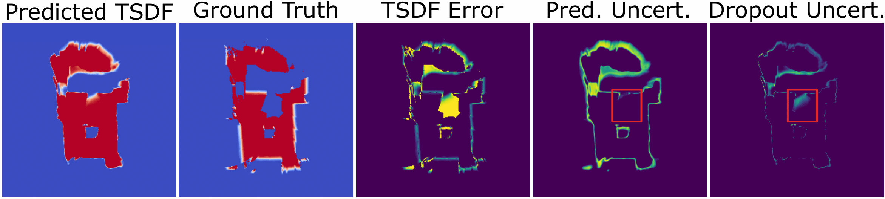
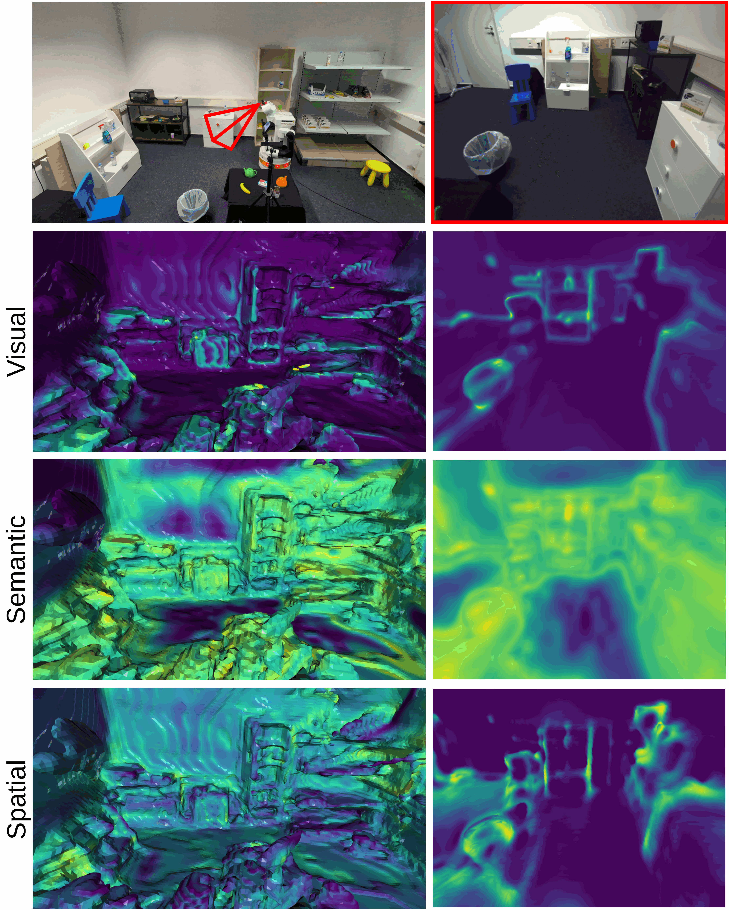
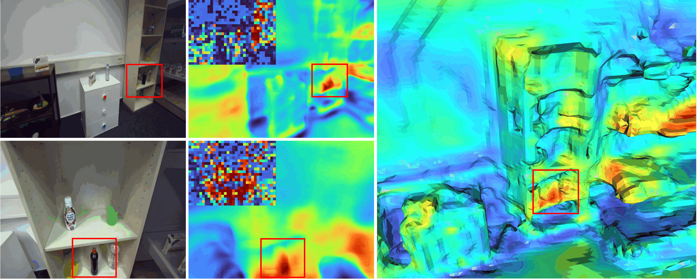

UniFField: A Generalizable Unified Neural Feature Field for
Visual, Semantic, and Spatial Uncertainties in Any Scene
Comprehensive visual, geometric and semantic understanding of a 3D scene is crucial for successful execution of robotic tasks, especially in unstructured and complex environments. Additionally, to make robust decisions it is necessary for the robot to evaluate the reliability of perceived information. While recent advances in 3D neural feature fields have enabled robots to leverage features from pretrained foundation models for tasks such as language-guided manipulation and navigation, existing methods suffer from two critical limitations: (i) they are typically scene-specific, and (ii) they lack the ability to model uncertainty in their predictions. We present UniFField, a unified uncertainty-aware neural feature field that combines visual, semantic, and geometric features in a single generalizable representation while also predicting uncertainty in each modality. Our approach, which can be applied zero shot to any new environment, incrementally integrates RGB-D images into our voxel-based feature representation as the robot explores the scene, simultaneously updating uncertainty estimation. We evaluate our uncertainty estimations to accurately describe the model prediction errors in scene reconstruction and semantic feature prediction. Furthermore, we successfully leverage our feature predictions and their respective uncertainty for an active object search task using a mobile manipulator robot, demonstrating the capability for robust decision-making.

I. INTRODUCTION#
Generalist robots that can adapt to any environment, whether a cluttered living room or a busy kitchen, represent the next frontier in robotics. Such robots require effective 3D perception to quickly understand scenes, make decisions, and act. To this end, there has been significant interest in building 3D neural representations for robots by distilling features from 2D vision encoders and foundation models into 3D [1]. This enables robots to leverage prior, pretrained information for tasks such as language-guided manipulation and navigation [2, 3, 4, 5]. However, most 3D neural feature fields are scene-specific, i.e., they are trained using a fixed set of 2D images and their respective features captured for a single scene. Moreover, a significant drawback of these techniques, which use NeRF or Gaussian Splatting representations, is the inability to incrementally add observations as the robot explores the scene, which is crucial for robots that need to operate in unknown or quickly changing environments.
Recently, attempts have been made to learn general-purpose feature fields for robots that can be pretrained on multiple scenes and then be applied zero shot to any scene [6]. Moreover, some recent works have also focused on learning incremental neural representations that can aggregate information over time [7, 8]. However, a key missing piece for such 3D feature representations is the ability to model the reliability or uncertainty of perceived scene features. Such uncertainty can be crucial for continuous robot perception in real-world scenarios where observations can be noisy, partial, and only parts of objects can be briefly seen. Moreover, most 2D vision feature encoders such as CLIP [9] or DINO [10] can still be very noisy in their predictions, especially in partially observable settings. Therefore, it is crucial to have a 3D feature representation that can also model uncertainty in the features, which can be used for downstream tasks such as active perception and exploration. Especially for active exploration, uncertainties can exist when parts of the scene remain unexplored, from model uncertainty due to limited knowledge or insufficient training data (epistemic uncertainty), or from inherent noise in the observations used for learning (aleatoric uncertainty).
This work introduces UniFField, a unified uncertainty-aware neural feature field for 3D scene understanding from multi-view RGB-D data. Our 3D feature field combines visual, semantic, and geometric features in one representation while also predicting uncertainty in each modality.
Our main contributions are as follows,
- We propose a generalizable unified neural feature field, UniFField, that provides a prior for visual, semantic, and geometric feature predictions. Semantic information is integrated by distilling 2D vision-language features into the 3D representation.
- We use UniFField to model uncertainty in each modality, enabling robust decision making in partially observable settings. Our predicted uncertainties accurately describe the prediction errors of the model.
- Our representation lifts features from 2D to 3D while also being aggregating, i.e., it allows incremental updates, ideal for robots continuously exploring scenes.
- We devise a simple but effective approach to using the uncertainty-aware UniFField for an active object search task using a mobile manipulator robot.
II. RELATED WORK#
Geometric Reconstruction. Multi-view geometric scene reconstruction methods can be divided into (i) Depth-based methods [11, 12] that estimate per-view depth maps, merge them via volumetric fusion [13, 14], and ensure consistent surface representation [15, 16]; and (ii) Volumetric methods [17, 18] that operate on dense 3D grids for occupancy or signed distance prediction. High computation time remains a challenge for both approaches, with recent work focusing on high-quality real-time reconstruction both for depth-based [19, 20] and volumetric methods [18]. Recent works have combined both concepts [17, 21] to overcome their downsides, namely low prediction quality in areas of few feature points [22], floating artifacts due to lack of global consistency [19] in depth-based methods, and inadequate modeling of view-dependent information in volumetric methods [19].
Generalizable Priors. Incorporating learned priors into neural fields can improve prediction quality of geometric reconstruction or other modalities like semantics. While geometric priors significantly alleviate reconstruction challenges [23, 24, 25], they still require training a separate model from scratch for every scene. In contrast, generalizable scene priors [26, 27] learned from large-scale datasets generalize better across unseen scenes [28], allowing for fast and robust reconstruction even with limited input views [22]. Generalizable Priors can also be used for understanding the semantics of previously unseen 3D scenes [6, 29, 5, 30, 31].
Semantic Scene Understanding. Feature Fields extend Neural Fields, which combine the encoding of image and spatial representations of a scene, with additional modalities like semantic information [10, 9], e.g. with language [32, 2, 30]. The combination of geometric and semantic features can improve performance, leveraging each others’ consistency [31]. Featurenerf [33] utilizes this property to transform part segmentation labels and key-points to different views. Other approaches [34, 35, 30] enable open-vocabulary and zero-shot spatial reasoning for tasks like 3D semantic segmentation and 3D object search.
Uncertainty Quantification for Neural Radiance Fields. Estimating uncertainty of neural representations can be used for decision making in active perception pipelines [36]. While the predicted uncertainty can be modeled directly as a Gaussian distribution over outputs [32], we aim to learn a prior over the uncertainty in the training data. Distractor-free NeRFs separate scenes into static and dynamic components with, e.g., the help of semantic features [37, 38, 3]. Similarly, we also integrate additional uncertainty indicators obtained from the input data to improve overall uncertainty quantification. For radiance fields, variational Bayesian methods can be used to model distribution [39, 40]. We leverage approximate Bayesian methods like Dropout [41] and Ensembles [42, 43], that have been adapted for NeRFs [44]. Bayes’ Rays [45] estimates epistemic uncertainty post training of NeRFs by learning a volumetric field of allowed spatial perturbations that do not degrade reconstruction quality. EvidMTL [46] jointly predicts semantics and depth with explicit aleatoric and epistemic uncertainties, enabling uncertainty-aware 3D semantic monocular TSDF mapping.
We choose a hybrid geometric approach similar to [17] and enrich our accumulated volumetric features [44] with depth maps. We learn generalizable semantic priors similar to GeFF [6] and leverage a voxel-based feature representation [29]. Despite recent advances in generalizable neural radiance fields, their ability to quantify uncertainty remains limited. In this work, we bridge this gap with UniFField.
III. UniFField#
We address the problem of creating an uncertainty-aware scene representation that can serve as a foundational component for robotic perception, without per-scene optimization. Given posed RGB-D frames , with color images , depth maps , camera poses , and camera intrinsics , we design a unified feature field
conditioned on . We map every point to a unified feature of dimension that describes the visual, spatial, and semantic properties of the scene, as well as the corresponding uncertainty. The field is implicit, i.e., queryable at any arbitrary 3D location, allowing for flexible extraction of information at any spatial point. Finally, the field is additive, i.e., allows incremental updates as new RGB-D frames are observed in the scene (2).
![Figure 2: Overview of UniFField. Given a sequence of RGB-D reference frames of a scene, we combine image features Vc, an initial TSDF volume Vd, and uncertainty indicators Vu to construct a unified feature volume VΨ. We employ knowledge distillation of a teacher model F, novel view synthesis, and geometric reconstruction as pre-training objectives to build the generalizable model. At test time, the model generates visual, spatial, and semantic scene properties, along with their associated uncertainty.](img/images/overview_v2.png)
III-A Constructing a Unified Feature Field#
We build a feature volume that structures the scene as a 3D voxel grid with spatial dimensions . First, we extract dense image features from each RGB image using a 2D CNN encoder [44]. Every pixel’s feature is then back-projected along its viewing ray, assigning that feature to all voxels intersected by the ray. This creates an image feature volume , averaged over all accumulated observations , as in [44]. To further inform the network of the precise spatial locations where features should be assigned, we use depth guidance [17] from the input depth channel. We apply the standard TSDF fusion [13] algorithm on the depth channel to acquire an initial TSDF (Truncated Signed Distance Function) volume of the scene.
Additionally, to guide the downstream uncertainty predictions of the network, we add two more input signals: voxel-wise feature count and feature variance. The feature count is the number of observations accumulated in each voxel in the feature volume, while feature variance is the variance of those features across observations. Both signals essentially provide metadata from the input feature fusion process, serving as indicators of uncertainty over the volume: .
We concatenate all volumes into and refine the combined features using a 3D CNN [17] to produce the final unified feature volume . We apply trilinear interpolation on the feature volume to create the feature field , allowing us to query unified features at any continuous 3D location .
III-B Decoding the Unified Feature Field#
To decode the feature field, we construct three decoding networks on top of the feature field, with their outputs modeled as the mean and variance of Gaussian distributions. Specifically, we predict
where , , and are visual, semantic, and geometric networks implemented as MLPs with two heads. They map a unified feature at 3D point to the mean RGB value , semantic feature with feature dimension , TSDF value , and corresponding log variance , , and to express uncertainty. By conditioning decoding networks on the unified, view-independent features , the feature field captures scene priors, effectively enabling any-scene generalization.
We utilize differentiable volume rendering [47] to project the predicted properties from 3D space into 2D for training. To apply volume rendering, we model the density at a point as the transformed TSDF following volume rendering methods for geometric reconstruction [48, 23, 24, 49]. Specifically, we adopt the Laplace cumulative distribution function from [49] to define density as
where is a learnable parameter. For a ray with origin and view direction , we render scene properties
where is rendered RGB color, is a semantic feature with feature dimension , is rendered depth, and is rendered log-variance of either color, semantic feature, or TSDF value. Transmittance quantifies the accumulated density up to , and , are the minimum and maximum bounding distances.
III-C Uncertainty-aware Supervision#
To supervise the visual and semantic properties of UniFField, we use ground-truth target RGB frames and pseudo-ground-truth semantic features. This pre-training task of novel-view reconstruction and feature prediction thus facilitates the learning of visual and semantic priors over any scene [28, 33, 6]. For semantic feature supervision, we leverage knowledge distillation using MaskCLIP [50] as the teacher model . Nevertheless, our model is designed to support any teacher model. While CLIP [9] extracts image-level features, MaskCLIP allows extracting dense, patch-level features from CLIP, suitable for dense supervision. Aligning our unified features with those of CLIP allows for language-based querying in 3D at inference time. For geometric supervision, we apply TSDF learning [44, 17] by minimizing the difference between predicted and target TSDF values in 3D.
We supervise the model’s color, semantic feature, and TSDF predictions by replacing the common loss function (e.g., L1 or L2 loss) with an uncertainty-aware loss function , which enables the learning of the uncertainty estimate alongside the model’s output. We assume a Gaussian distribution of the model’s output and utilize a heteroscedastic loss [51], typically used to quantify aleatoric uncertainty [52] given by
where is the predicted log-variance, is the predicted mean and is the ground truth for an input . To control the trade-off between the prediction accuracy and the accuracy of predicted log-variance, we introduce a masked loss that blends between the heteroscedastic loss and the standard loss, given by
where is the number of samples , drawn from a Bernoulli distribution with probability , that are used for supervision.
We train the model using RGB-D frame sequences from the ScanNet dataset [53]. During training, we first construct the feature field of a given scene using randomly sampled reference frames from the entire sequence. For supervision, we sample additional target frames. For every target frame, we sample pixels to construct rays and use them for both the color loss and the semantic feature loss . For the TSDF loss , we use the resulting stratified point samples along the rays and supervise the TSDF values at these positions.
At inference time, we directly build the feature field of a novel scene and predict properties and uncertainty estimates in both 2D and 3D in a single forward pass. Incremental updates are made via a running average of the existing and new unified feature volumes from new RGB-D frames.



IV. EXPERIMENTS#
We evaluate UniFField with the following experiments:
- First, we perform scene understanding experiments on unseen frame sequences from the ScanNet dataset to measure our representations’ alignment with ground-truth visual, semantic, and geometric properties.
- Second, we evaluate our predicted uncertainties. We evaluate how well the uncertainty measure predicted by UniFField describes the prediction errors of the model.
- Third, we validate the ability of our representation to be used for active object search tasks in both simulation and on a real mobile manipulator robot.
We train UniFField on ScanNet scenes [53]. For evaluation, we use a stream of input RGB-D reference frames of arbitrary length (e.g., a few frames to a few hundred ScanNet frames). Evaluations are performed on unseen scenes without per-scene optimization. Creating a feature volume takes 0.04s per frame while extracting the TSDF and rendering a 640x480 feature map takes 1.26s and 7.70s respectively.
IV-A Alignment with scene properties#
We first verify that our unified feature field can be used as a general-purpose, task-agnostic scene representation for various 3D scene understanding tasks. We provide quantitative and qualitative results to verify alignment of UniFField with the ground-truth RGB, pseudo-ground-truth semantic features, and ground-truth TSDF of unseen ScanNet scenes.
For visual alignment, we compare against a NeRF [47] as a reference point for a neural representation trained on a target scene. UniFField successfully recovers the scene’s appearance without any optimization, as shown in 5. Furthermore, the quantitative results for a varying number of reference frames for the scene are shown in I(a), demonstrating the effectiveness of UniFField in sparse data conditions with and without depth guidance (DG).
| Method | PSNR | SSIM | LPIPS | |
|---|---|---|---|---|
| 1658 | NeRF [47] | 23.302 | 0.786 | 0.531 |
| Ours (w/o DG) | 18.602 | 0.752 | 0.575 | |
| Ours | 18.216 | 0.752 | 0.569 | |
| 50 | NeRF [47] | 14.634 | 0.626 | 0.642 |
| Ours (w/o DG) | 16.060 | 0.701 | 0.632 | |
| Ours | 16.259 | 0.705 | 0.639 | |
| 25 | NeRF [47] | 13.790 | 0.601 | 0.654 |
| Ours (w/o DG) | 14.881 | 0.679 | 0.633 | |
| Ours | 15.013 | 0.671 | 0.648 |
At inference, UniFField generates spatially consistent CLIP feature maps in unseen scenes that can be rendered at any resolution. They are expressive enough to support semantic similarity search using cosine similarity with language queries, as shown in 5. Quantitatively, over all 100 scenes in the ScanNet test set, the mean average error (MAE) and squared errors (MSE and RMSE) between normalized MaskCLIP and UniFField features are small (I(b)).
For geometric alignment, we show geometric reconstruction results (I(c)) following the evaluation protocol in [44] and compare with volumetric reconstruction methods Atlas [44] and FineRecon [17] on all 100 scenes in the ScanNet test set. FineRecon only performs geometric reconstruction, and its performance serves as an upper-bound reference for UniFField since it uses a similar geometric architecture with depth guidance. The learned geometric priors of UniFField are similarly effective in producing complete geometry even in scene parts that were not observed (5). Our method competes with Atlas [44], specifically, achieving better results in most metrics, including Chamfer distance and F-score. Although Atlas generally oversmoothes surfaces, our approach resolves higher detail at the cost of noisier geometry. The ablation of our approach without depth guidance (DG) reveals that reconstruction performance significantly depends on the additional depth input.
| Space | Prediction Error | Uncertainty | AUSE | Correlation (Significance ) | |||||
|---|---|---|---|---|---|---|---|---|---|
| MAE | MSE | RMSE | MAE | MSE | RMSE | ||||
| 2D | Color | Visual | Pred. | 0.213 | 0.243 | 0.233 | 0.474 (0.97) | 0.481 (0.97) | 0.481 (0.97) |
| Drop. | 0.263 | 0.310 | 0.289 | 0.375 (0.93) | 0.380 (0.94) | 0.380 (0.94) | |||
| Rand. | 0.526 | 0.745 | 0.566 | 0.000 (0.04) | 0.000 (0.04) | 0.000 (0.04) | |||
| 2D | CLIP Feature | Semantic | Pred. | 0.095 | 0.156 | 0.095 | 0.220 (0.98) | 0.209 (0.97) | 0.209 (0.97) |
| Drop. | 0.144 | 0.211 | 0.127 | 0.063 (0.54) | 0.052 (0.54) | 0.052 (0.54) | |||
| Rand. | 0.170 | 0.238 | 0.141 | 0.000 (0.04) | 0.001 (0.05) | 0.001 (0.05) | |||
| 3D | TSDF | Spatial | Pred. | 0.013 | 0.011 | 0.054 | 0.561 (1.00) | 0.561 (1.00) | 0.561 (1.00) |
| Drop. | 0.164 | 0.184 | 0.326 | 0.592 (1.00) | 0.592 (1.00) | 0.592 (1.00) | |||
| Rand. | 0.965 | 0.967 | 0.969 | 0.000 (0.05) | 0.000 (0.05) | 0.000 (0.05) | |||
IV-B Uncertainty estimation#
The key benefit of UniFField is the ability to model visual, spatial, and semantic uncertainties associated with the observed scene. To evaluate the quality of our learned uncertainties, we assess their alignment with the corresponding model prediction errors. Furthermore, we compare our learned uncertainties, which are a combination of aleatoric and epistemic uncertainty, against epistemic model uncertainties estimated using Monte Carlo dropout ensembles [51, 42]. To obtain dropout ensemble-based uncertainty, we add dropout operations to the 3D CNN convolutions and calculate the output variance over 10 forward passes. We evaluate over all 100 test scenes in ScanNet and, as in the previous subsection, perform visual and semantic evaluations for all frames in 2D by rendering our corresponding uncertainty outputs, while performing TSDF evaluations in 3D.
We evaluate alignment with prediction errors—mean absolute error (MAE), mean squared error (MSE), and root mean squared error (RMSE)—using two metrics: (i) Area Under Sparsification Error (AUSE) [54, 55], which is obtained by creating sparsification curves by progressively removing predictions with highest uncertainty and computing the error on the remaining predictions, (ii) Spearman’s rank correlation coefficient () [56], which is a non-parametric measure that quantifies how well uncertainties track actual errors in a monotonic, rank-based manner. Unlike linear correlation measures, it does not assume linearity or a specific distribution. We consider a correlation statistically significant if the p-value is below a significance level . We also include a random uncertainty reference baseline, generated by sampling uniform uncertainty values to simulate a random ranking. It serves as a lower bound for the AUSE and correlation coefficient metrics.


In II, the evaluation metrics are presented, which indicate a significant, monotonic relationship between the predicted uncertainties and their corresponding prediction errors. In most comparisons, the quantified uncertainties best describe the average deviations expressed with the MAE, compared to metrics that emphasize outliers (MSE or RMSE). A qualitative comparison reveals the behavior of different types of uncertainties across modalities, as shown in 6. Dropout ensemble-based uncertainty is less effective in identifying errors in the 2D domain, while it is slightly better for indicating 3D TSDF prediction errors across all voxels. Specifically, 3D spatial errors that arise due to unobserved areas can sometimes be better identified with dropout ensemble-based uncertainty in comparison to the predicted uncertainty, as illustrated in 7.
IV-C Active object search with a mobile manipulator#
We demonstrate a practical active object search task in the real world using a TIAGo mobile manipulator in an indoor environment. The robot is equipped with a head-mounted ZED2i RGB-D stereo camera. We analyze the captured uncertainties in the scene, highlight the flexibility of our approach in representing scene properties, and assess the robustness of our method in novel real-world data conditions.

The feature representation is created by collecting posed RGB-D observations using a robot object search policy in the indoor environment. We run inference to predict scene properties and use the semantic features to perform object search. Since our model is queryable at any 3D location, it allows predicting scene properties directly in 3D. As shown in 8, the properties of different uncertainties in 3D remain consistent with the rendered 2D uncertainty. We also observe low uncertainty across all modalities in simple-structured areas such as white walls or dark backgrounds. The drawer is similar to walls in terms of complexity of color and geometry, therefore exhibiting low spatial and visual uncertainty. However, it has a relatively higher semantic uncertainty, reflecting ambiguity, since it could also be interpreted as another piece of furniture.
To identify objects based on language queries, we first predict CLIP features for all voxels in our feature field and then calculate the cosine similarity between the features and the text encoding. To improve accuracy, we contrast the given positive text query with negative ones (e.g., “wall” or “ground”) using a temperatured softmax, following [9, 6]. Similarly to 3D uncertainty, the similarity volume can be mapped onto the scene geometry. In 9, we illustrate the similarity search result. In contrast to MaskCLIP [50], the predicted CLIP features are spatially consistent and do not depend on a particular good view of the scene.

We design a rule-based robot policy that uses the scene information from UniFField in three phases. In an initialization phase, the robot collects a few observations from different viewing directions. Then, during an exploration phase, the scene areas of highest visual uncertainty are repeatedly localized. By sampling a location from surface regions with highest uncertainty, the next ‘look-at’ position can be determined and approached, if not within a minimum distance. We find that replacing min-max normalization with quantile-based normalization when normalizing visual uncertainty can better indicate unobserved scene areas, as shown in 10. After a fixed number of exploration steps, we transition to an exploitation phase. We localize the position of the most similar object according to the language query, while taking spatial uncertainty into account. In 10, we show different methods for combining similarity and uncertainties. Since spatial uncertainty appears in areas of high depth contrast and complex geometry, we weight the similarity by the inverse of normalized spatial uncertainty. This puts less weight on geometrically uncertain regions for better localization of the target object. The shown combination of multiple uncertainties involves combining inverse uncertainties using a product and then using them as weighting for the similarity. A demonstration of the robot policy is available at https://sites.google.com/view/uniffield.
![Figure 10: Uncertainty to improve exploration and similarity search. We compare different methods of normalizing uncertainty across the scene and combining it with language similarity. Quantile-based normalization restricts outliers, producing a measure that allows for the indication of unobserved scene geometry. Combining similarity using spatial uncertainty helps to improve the localization of a query object, while using all uncertainties lowers the overall similarity score for the specific target object.](img/images/uncert_for_enhancements_v3.png)
V. CONCLUSION AND LIMITATIONS#
In this work, we introduced UniFField, a generalizable scene representation that quantifies uncertainty of different modalities from multi-view RGB-D data. Our experiments confirm that the representation generalizes to unseen scenes, enabling 3D scene understanding tasks while simultaneously allowing for uncertainty predictions that appropriately describe the corresponding prediction errors.
Nevertheless, the uncertainty estimates leave room for improvement, since we found that multiplicative combinations of uncertainty estimates do not always perform consistently, with effectiveness varying with language queries. Another limitation is that scaling up the model to enable larger-scale pretraining would hurt real-time performance. Our future work will thus focus on improving network inference speed and application to robotic tasks such as uncertainty-aware active object reconstruction.
References#
- [1] Distilled feature fields enable few-shot language-guided manipulation. in CoRL, 2023.
- [2] Language embedded radiance fields for zero-shot task-oriented grasping. in CoRL, 2023.
- [3] Dfields: Dynamic 3d descriptor fields for zero-shot generalizable rearrangement. in CoRL, 2024.
- [5] G3flow: Generative 3d semantic flow for pose-aware and generalizable object manipulation. in CVPR, 2025.
- [6] Learning generalizable feature fields for mobile manipulation. arXiv preprint arXiv:2403.07563, 2024.
- [7] Clip-fields: Weakly supervised semantic fields for robotic memory. in RSS, 2023.
- [8] Language-embedded gaussian splats (legs): Incrementally building room-scale representations with a mobile robot. in IROS, 2024.
- [9] Learning transferable visual models from natural language supervision. in ICML, 2021.
- [10] Dinov2: Learning robust visual features without supervision. TMLR, 2024.
- [11] Multi-view depth estimation using epipolar spatio-temporal networks. in CVPR, 2021, 2021.
- [12] The temporal opportunist: Self-supervised multi-frame monocular depth. in CVPR, 2021, 2021.
- [13] A volumetric method for building complex models from range images. in SIGGRAPH, 1996.
- [14] Kinectfusion: real-time 3d reconstruction and interaction using a moving depth camera. in ACM, 2011.
- [15] Multi-view stereo in the deep learning era: A comprehensive revfiew. Displays, 2021.
- [16] Learning-based multi-view stereo: A survey. arXiv preprint arXiv:2408.15235, 2024.
- [17] Finerecon: Depth-aware feed-forward network for detailed 3d reconstruction. in ICCV, 2023.
- [18] A hybrid architecture of sparse convolutional neural network-transformer for enhanced spatial-geometric feature learning in surface reconstruction. Eng. Appl. Artif. Intell., 2025.
- [19] Simplerecon: 3d reconstruction without 3d convolutions. in ECCV, 2022.
- [20] Doubletake: Geometry guided depth estimation. in ECCV, 2024.
- [21] Cvrecon: Rethinking 3d geometric feature learning for neural reconstruction. in ICCV, 2023.
- [22] Sparseneus: Fast generalizable neural surface reconstruction from sparse views. in ECCV, 2022.
- [23] Neural rgb-d surface reconstruction. in CVPR, 2022.
- [24] Neural 3d scene reconstruction with the manhattan-world assumption. in CVPR, 2022.
- [25] Fastsurf: Fast neural RGB-D surface reconstruction using per-frame intrinsic refinement and TSDF fusion prior learning. arXiv preprint arXiv:2303.04508, 2023.
- [26] One-2-3-45: Any single image to 3d mesh in 45 seconds without per-shape optimization. in NeurIPS, 2023.
- [27] One-2-3-45++ fast single image to 3d objects with consistent multi-view generation and 3d diffusion. in CVPR, 2024.
- [28] 3d reconstruction with generalizable neural fields using scene priors. in ICLR, 2024.
- [29] Gnfactor: Multi-task real robot learning with generalizable neural feature fields. in CoRL, 2023.
- [30] Gov-nesf: Generalizable open-vocabulary neural semantic fields. in CVPR, 2024.
- [31] Gsnerf: Generalizable semantic neural radiance fields with enhanced 3d scene understanding. in CVPR, 2024.
- [32] Dense depth priors for neural radiance fields from sparse input views. in CVPR, 2022.
- [33] Featurenerf: Learning generalizable nerfs by distilling foundation models. in ICCV, 2023.
- [34] Conceptfusion: Open-set multimodal 3d mapping. in RSS, 2023.
- [35] Openscene: 3d scene understanding with open vocabularies. in CVPR, 2023.
- [36] Active-perceptive motion generation for mobile manipulation. in ICRA, 2024.
- [37] Emernerf: Emergent spatial-temporal scene decomposition via self-supervision. in ICLR, 2024.
- [38] Nerf on-the-go: Exploiting uncertainty for distractor-free nerfs in the wild. in CVPR, 2024.
- [39] Stochastic neural radiance fields: Quantifying uncertainty in implicit 3d representations. in 3DV, 2021.
- [40] Conditional-flow nerf: Accurate 3d modelling with reliable uncertainty quantification. in ECCV, 2022.
- [41] Simple and scalable predictive uncertainty estimation using deep ensembles. in NeurIPS, 2017.
- [42] Dropout as a bayesian approximation: Representing model uncertainty in deep learning. in ICML, 2016.
- [43] Density-aware nerf ensembles: Quantifying predictive uncertainty in neural radiance fields. in ICRA, 2023.
- [44] Atlas: End-to-end 3d scene reconstruction from posed images. in ECCV, 2020.
- [45] Bayes' rays: Uncertainty quantification in neural radiance fields. CVPR, 2024.
- [46] EvidMTL: Evidential multi-task learning for uncertainty-aware semantic surface mapping from monocular RGB images. in IROS, 2025.
- [47] Nerf: Representing scenes as neural radiance fields for view synthesis. in ECCV, 2020.
- [48] Neus: Learning neural implicit surfaces by volume rendering for multi-view reconstruction. in NeurIPS, 2021.
- [49] Volume rendering of neural implicit surfaces. NeurIPS, 2021.
- [50] Extract free dense labels from clip. in ECCV, 2022.
- [51] What uncertainties do we need in bayesian deep learning for computer vision?. NeurIPS, vol. 30, 2017.
- [52] Activenerf: Learning where to see with uncertainty estimation. in ECCV, 2022.
- [53] Scannet: Richly-annotated 3d reconstructions of indoor scenes. in CVPR, 2017.
- [54] A statistical confidence measure for optical flows. in ECCV, 2008.
- [55] Probflow: Joint optical flow and uncertainty estimation. in ICCV, 2017.
- [56] The proof and measurement of association between two things. The American journal of psychology, vol. 100, no. 3/4, pp. 441–471, 1987.